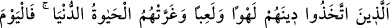
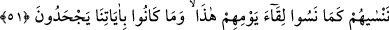

edilmektedir.
Ebü’l-Cevzâ der ki: İbn Abbas (r. anhümâ)’ya hangi sadakanın daha faziletli
olduğunu sordum. “Sudur. Görmüyor musun cehennem ehli, cennet halkından yardım
talebinde bulunduklarında, “bize su akıtın” derler.” diye cevap verdi.
Sa’d b. Ubâde’den rivayet olunduğuna göre o Rasûlullah (s.a.v.)’e şöyle demiştir:
“Ya Rasûllallah, Ümmü Sa’d öldü. Onun hayrı için yapabileceğim en faziletli sadaka
nedir? Rasûl-i Ekrem (a.s.): “Su” buyurdu. Sa‘d bir kuyu kazdırdı. Peygamber
Efendimiz de: “Bu, Ümm-i Sa‘d’ın kuyusudur.” buyurdu.[45]
Fakir Bursevî derim ki: Bu hadis sadakanın ölülere fayda sağladığına delil teşkil
eder. Nitekim ehl-i sünnet âlimleri bu görüşü benimsemişlerdir.
Hadiste suyun özellikle zikredilmesinin iki sebebi olabilir: Birincisi, Hicaz suya çok
ihtiyaç duyan bir bölge olduğu için su, daha çok sevaba vesile olur. İkincisi, cehennem
sıcak bir yerdir. Hararetin giderilmesi zıddıyle mümkündür. O da suyun vasıflarından
biri olan soğukluktur. Çünkü her şeye, zıddıyle mukabele edilir. En doğrusunu Allah
bilir.
Rivayete göre cennet ehline kırk yıl cevap verme izni verilmez. Sonra cevaba izin
verilir. Onlar da cehennemliklere “derler ki: “Allah, bu ikisini kâfirlere haram
etmiştir.”
Yani cennetin yiyecek ve içeceğini onlara yasaklamıştır. Böyle bir şeyin olmasına asla
imkan yoktur. Kâfirlerin içeceği, kaynar sudur. Bu su, onların karınlarının içindekilerini
ve derilerini eritir. Yiyecekleri ise, kuru diken ve zakkumdur.
51. O kâfirler ki, dinlerini bir eğlence ve oyun edindiler de dünya hayatı onları
aldattı. Onlar, bu günleri ile karşılaşacaklarını unuttukları ve ayetlerimizi bile bile
inkâr ettikleri gibi biz de bugün onları unuturuz.
“Onlar ki” dünyada iken uymakla emrolundukları “dinlerini” yani, İslâm dinini “bir
eğlence ve oyun edindiler” oynadıkları bir oyuncak hâline getirdiler. Dilediklerini
haram, istediklerini de helâl sayıyorlardı. Allah’ın emrine uymuyorlar, şeytanın
kendilerine süslü gösterdiği arzularına tâbi oluyorlardı.
Denilmiştir ki: Onların dîni, İsmail (a.s.)’ın dini idi. Onu değiştirip istedikleri gibi
yaşadılar. Yâhut da himmetlerini, sarfolunması uygun olmayan şeylere sarfettiler.
Gereksiz şeyleri elde etmenin peşine düştüler.
Farsça tefsirde şöyle denilmiştir: “dinlerini” kendi bayramlarını, “bir eğlence ve
oyun edindiler” kendi bayramlarında Kabe’nin etrâfına gelirler, ellerini birbirine